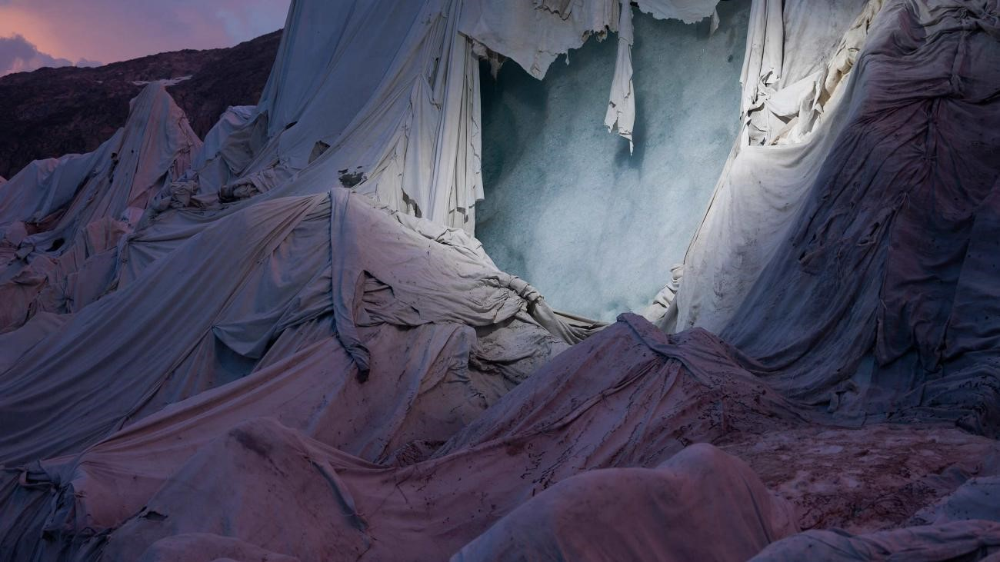
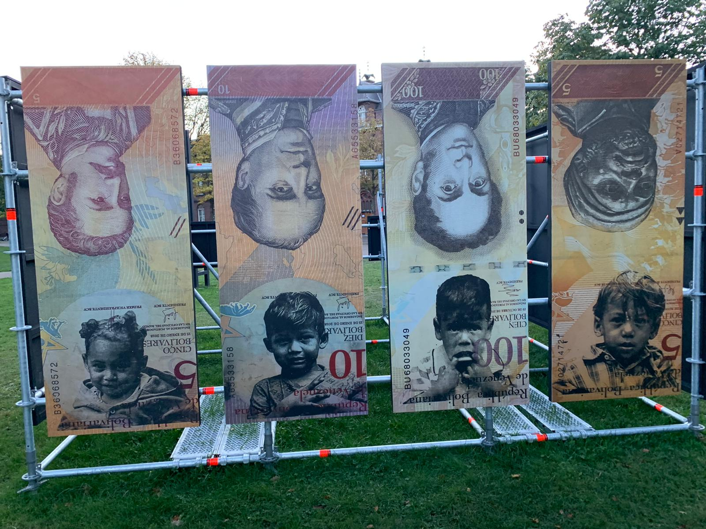

Dit ben ik weer voor CKV naar Breda foto gegaan. Ik ben naar het chasséveld geweest omdat hier erg veel interessante fotografen tentoon worden gesteld. Ik heb hier vier fotografen in het bijzonder bekeken. Deze fotografen hebben goed het thema 'The best of times, the worst of times' in beeld gebracht en hebben hier erg mooie foto's laten zien.
Mijn favoriete foto’s die ik heb gezien waren die van Simon Norfolk & Klaus thymann. Die foto’s gaan over het smelten van Rhôhne gletsjer en de wanhopige maatregelen die de mensheid neemt om dit tegen te gaan. In de foto’s wordt mooi en volledig in beeld gebracht hoe de mensheid de strijd tegen de natuur verliest. De maatregelen die worden genomen (namelijk het inpakken van de gletsjer met een thermische deken) zijn niet effectief omdat de dekens uit elkaar vallen.

De foto’s zijn in een donker tijdstip gemaakt wat de foto een mooi effect geeft. Als deze foto in zwart-wit was gemaakt had deze er ook erg saai uit gezien. Maar nu is het een wat blauwige foto.
Het is een foto waar een politiek probleem mee in beeld wordt gebracht. Ook daarom heb ik deze fotografen gekozen. Ik vind namelijk dat fotografie een goed medium is van het overbrengen en informeren over politieke problemen.
De donkere belichting en kleuren laten de foto’s je een koud gevoel geven. De dekens die half kapot over de gletsjers hangen laten je nadenken over de ernst van de situatie en hoe deze ervoor staat. Ook om deze reden past het goed bij
het thema 'The best of times, the worst of times.' Omdat de huidige situatie er slecht voor staat.
Ik vind ook dat Todd R. Darling mooie foto’s heeft weggezet. De foto’s gaan over de politieke situatie in Hong Kong. In de foto’s zijn activisten en Hip Hop artiesten in beeld gebracht met teksten over hun ervaringen en meningen. De fotograaf probeert
dan ook de mensen in de foto en de bevolkingsgroepen die zij representeren een medium te geven voor hun visie op de situatie die daar speelt. De rauwe foto’s zijn dan ook een vrij volledig plaatje van de emotie en kijk vanuit de gefotografeerden.
De foto’s dan zijn dan ook extra rauw gemaakt doordat ze in zwart wit zijn genomen. Als de foto’s in kleur waren genomen waren de foto’s ook minder goed overgekomen.
Het is dan ook een foto met een politieke bedoeling. Dat is dan ook waarom ik deze fotograaf heb gekozen. Ik vind het verhaal achter een foto belangrijk. Het unieke aan de foto’s vind ik het gebruik van de achtergrond. Er is
overduidelijk de nadruk gelegd op het persoon maar de fotograaf is de achtergrond niet vergeten. De kleuren in deze foto’s brengen een bepaalde wanhoop met zich mee die de mensen in Hong Kong voelen. Dit laat mij erg nadenken. De tentoonstelling
past zo ook goed bij het thema 'The best of times, the worst of times.' Omdat het een lastige situatie laat zien over mensen in Hong Kong en hoe deze mensen er bovenop willen komen.
Adreinne waheed en haar foto’s hebben als doel het stereotype over de zwarte cultuur te nuanceren. In de media worden de zwarte bevolkingsgroepen vaak weggezet als slachtoffer of dader. Hier wilt de fotograaf door middel van fotografie iets aan doen.
Ze fotografeert feesten en demonstraties en probeert hier vooral de persoonlijkheid ervan vast te leggen. De foto’s zijn dan ook erg rauw.
In de foto’s is ook erg veel gebruik gemaakt van kleur. Dit om een zo leefdelijk mogelijk beeld te vormen van de momenten die zijn vastgelegd. Deze foto zou dan ook heel kaal zijn in zwart wit. Het is dan ook een combinatie van
een Levensbeschouwelijke foto en een politieke foto, waar door middel van levensbeschouwing en cultuur een politiek probleem wordt aangehaald.
Ook deze fotograaf heb ik gekozen omdat ik het verhaal achter de foto’s belangrijker vind dan de foto’s zelf. In de foto’s is mooi gebruik gemaakt van perspectief, bijvoorbeeld de close-up van de demonstranten, licht en de levendige
kleuren die de foto’s veel leven in blazen. Ook het verhaal achter de foto’s zijn erg indrukwekkend en laten zien wat het goede in een slechte situatie is: 'The best of times, the worst of times.'
Felipe Jácome probeert met zijn foto’s de economische situatie in Venezuela te schetsen door foto’s te maken van mensen die het land ontvluchten. Hij trok met deze mensen mee om foto’s te maken. Die foto’s heeft hij uitgeprint op Venezuelaans papiergeld wat vrijwel waardeloos is. Dit vind ik een erg mooi gebaar, omdat hiermee het perspectief vanuit de vluchtelingen erg goed wordt vastgelegd. Ook in combinatie met het feit dat het op geld wordt geprint straalt uit wat er gaande is. De foto’s laten goed en volledig zien in wat voor situatie de vluchtelingen zitten.

De beelden in deze foto’s worden in het zwart wit laten zien. Dit omdat de foto’s dan wegvallen met de biljetten waar het op staat geprint. Hierdoor lijken de foto’s zelf ook een biljet. Ik vind deze manier van foto’s tentoonstellen erg uniek. Er is ook
een foto waar kinderen in beeld worden gebracht met de biljetten wat een soort tegenovergesteld beeld creëert met aan de ene kant een hoofd wat op een biljet staat van een (wat rijkere) man en aan de andere kant de arme kinderen.
Van deze foto’s zou ik zeggen dat ze erg economisch gericht zijn, omdat er de nadruk wordt gelegd op de politieke situatie in de regio. De manier van het in beeld brengen van de situatie van de vluchtelingen op biljetten vond
ik erg uniek. Ook om deze reden had ik de fotograaf gekozen, omdat de manier van tentoonstellen mij erg aansprak. 'The worst of times' zijn goed terug te zien in deze foto's, en de situatie word erg goed in beeld gebracht door de fotograaf.
Ik vond de tentoonstelling erg mooi omdat het thema en de foto's je laten introduceren aan diverse problemen in de wereld en het laat je een mening vormen over de situatie. De manier van het in beeld brengen vond ik erg fascinerend en ik raad het andere mensen aan om ook deze tentoonstelling te bezoeken.